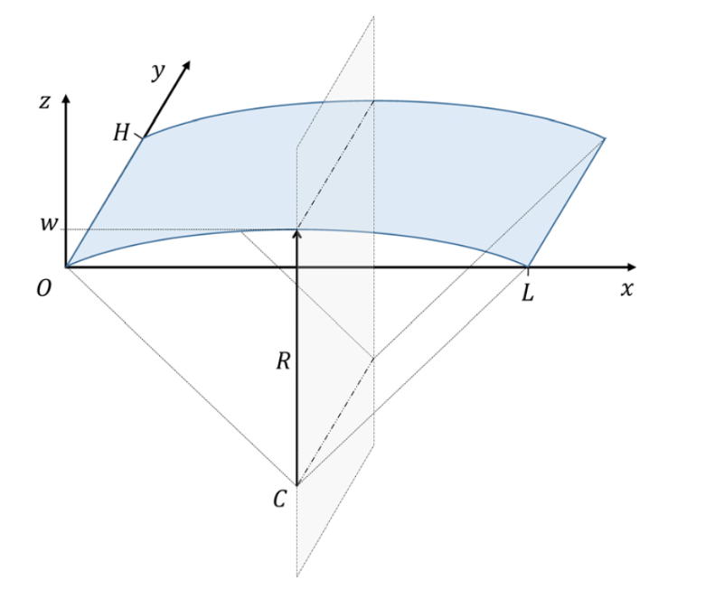
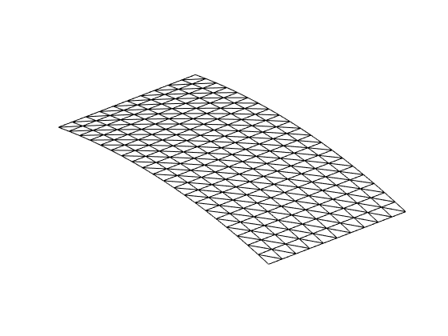
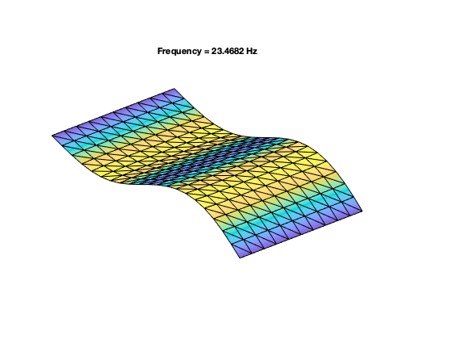
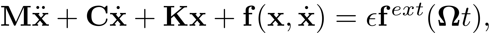
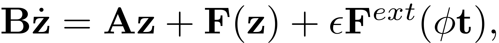
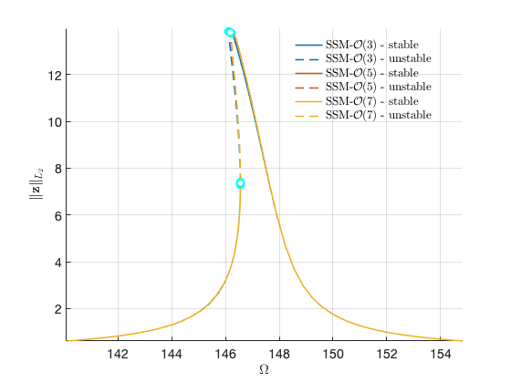
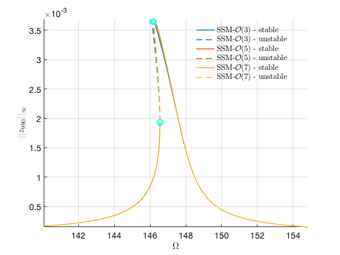

Shallow-curved shell structure with geometric nonlinearities
Contents
References
Finite element model used in the following reference:
Jain, S., & Tiso, P. (2018). Simulation-free hyper-reduction for geometrically nonlinear structural dynamics: a quadratic manifold lifting approach. Journal of Computational and Nonlinear Dynamics, 13(7), 071003. https://doi.org/10.1115/1.4040021
Finite element code taken from the following package:
Jain, S., Marconi, J., Tiso P. (2020). YetAnotherFEcode (Version v1.1). Zenodo. http://doi.org/10.5281/zenodo.4011282
System parameters
clear all nDiscretization = 10; % Discretization parameter (#DOFs is proportional to the square of this number) epsilon = 0.1;
generate model
[M,C,K,fnl,f_0,outdof] = build_model(nDiscretization); n = length(M); % number of degrees of freedom disp(['Number of degrees of freedom = ' num2str(n)]) disp(['Phase space dimensionality = ' num2str(2*n)])
Building FE model Assembling M,C,K matrices Applying boundary conditions Solving undamped eigenvalue problem Using Rayleigh damping Assembling external force vector Getting nonlinearity coefficients Loaded tensors from storage Total time spent on model assembly = 00:00:33 Number of degrees of freedom = 1320 Phase space dimensionality = 2640 
Dynamical system setup
We consider the forced system

which can be written in the first-order form as


where
![$\mathbf{z}=\left[\begin{array}{c}\mathbf{x}\\\dot{\mathbf{x}}\end{array}\right],\quad\mathbf{A}=\left[\begin{array}{cc}-\mathbf{K} & \mathbf{0}\\\mathbf{0} & \mathbf{M}\end{array}\right],\mathbf{B}=\left[\begin{array}{cc}\mathbf{C} & \mathbf{M}\\\mathbf{M} & \mathbf{0}\end{array}\right],\quad\quad\mathbf{F}(\mathbf{z})=\left[\begin{array}{c}\mathbf{-\mathbf{f}(\mathbf{x},\dot{\mathbf{x}})}\\\mathbf{0}\end{array}\right],\quad\mathbf{F}^{ext}(\mathbf{z},\mathbf{\phi})=\left[\begin{array}{c}\mathbf{f}^{ext}(\mathbf{\phi})\\\mathbf{0}\end{array}\right]$](vonKarmanShellWorkbookDoc_eq06277547758420750616-Rescaled.png) .
.
DS = DynamicalSystem(); set(DS,'M',M,'C',C,'K',K,'fnl',fnl); set(DS.Options,'Emax',5,'Nmax',10,'notation','multiindex')
We assume periodic forcing of the form

Fourier coefficients of Forcing
kappas = [-1; 1]; coeffs = [f_0 f_0]/2; DS.add_forcing(coeffs, kappas,epsilon);
Linear Modal analysis and SSM setup
[V,D,W] = DS.linear_spectral_analysis();
Due to high-dimensionality, we compute only the first 5 eigenvalues with the smallest magnitude. These would also be used to compute the spectral quotients Assuming a proportional damping hypthesis with symmetric matrices modal damping ratio for 1 mode is 2.000000e-03 modal damping ratio for 2 mode is 2.000000e-03 modal damping ratio for 3 mode is 2.269789e-03 modal damping ratio for 4 mode is 2.721500e-03 modal damping ratio for 5 mode is 2.909530e-03 the left eigenvectors may be incorrect in case of asymmetry of matrices The first 10 nonzero eigenvalues are given as 1.0e+02 * -0.0029 + 1.4745i -0.0029 - 1.4745i -0.0063 + 3.1598i -0.0063 - 3.1598i -0.0094 + 4.1319i -0.0094 - 4.1319i -0.0148 + 5.4515i -0.0148 - 5.4515i -0.0173 + 5.9601i -0.0173 - 5.9601i
Choose Master subspace (perform resonance analysis)
S = SSM(DS); set(S.Options, 'reltol', 0.1,'notation','multiindex') masterModes = [1,2]; S.choose_E(masterModes);
The master subspace contains the following eigenvalues lambda1 == - 0.2949104 + 147.4549i lambda2 == (-0.2949104) - 147.4549i (near) outer resonance detected for the following combinations of master eigenvalues They are in resonance with the following eigenvalues of the slave subspace 4*lambda1 + 0*lambda2 == - 1.734131 + 596.0149i 0*lambda1 + 4*lambda2 == (-1.734131) - 596.0149i sigma_out = 5 (near) inner resonance detected for the following combination of master eigenvalues: 2*lambda1 + 1*lambda2 == lambda1 3*lambda1 + 2*lambda2 == lambda1 1*lambda1 + 2*lambda2 == lambda2 2*lambda1 + 3*lambda2 == lambda2 sigma_in = 5
Forced response curves using SSMs
Obtaining forced response curve in reduced-polar coordinate
order = [3, 5, 7]; % Approximation order
setup options
set(S.Options, 'reltol', 1,'IRtol',0.02,'notation', 'multiindex','contribNonAuto',true) set(S.FRCOptions, 'nt', 2^7, 'nRho', 200, 'nPar', 200, 'nPsi', 100, 'rhoScale', 2 ) set(S.FRCOptions, 'method','continuation ep', 'z0', 1e-4*[1; 1]) % 'level set' set(S.FRCOptions, 'outdof',outdof)
choose frequency range around the first natural frequency
omega0 = imag(S.E.spectrum(1)); omegaRange = omega0*[0.95 1.05];
extract forced response curve
FRC = S.extract_FRC('freq',omegaRange,order); figFRC = gcf;
Compute FRC at order 3
***************************************** Calculating FRC using SSM with master subspace: [1 2] The master subspace contains the following eigenvalues lambda1 == - 0.2949104 + 147.4549i lambda2 == (-0.2949104) - 147.4549i (near) outer resonance detected for the following combinations of master eigenvalues They are in resonance with the following eigenvalues of the slave subspace 2*lambda1 + 0*lambda2 == - 0.631963 + 315.9809i 3*lambda1 + 0*lambda2 == - 0.631963 + 315.9809i 3*lambda1 + 1*lambda2 == - 0.631963 + 315.9809i .. 0*lambda1 + 5*lambda2 == (-1.734131) - 596.0149i sigma_out = 5 (near) inner resonance detected for the following combination of master eigenvalues: 2*lambda1 + 1*lambda2 == lambda1 3*lambda1 + 2*lambda2 == lambda1 1*lambda1 + 2*lambda2 == lambda2 2*lambda1 + 3*lambda2 == lambda2 sigma_in = 5 Due to (near) outer resonance, the exisitence of the manifold is questionable and the underlying computation may suffer. Attempting manifold computation Manifold computation time at order 2 = 00:00:00 Estimated memory usage at order 2 = 1.18E+01 MB Manifold computation time at order 3 = 00:00:00 Estimated memory usage at order 3 = 1.29E+01 MB Run='freqSubint1.ep': Continue equilibria along primary branch. STEP DAMPING NORMS COMPUTATION TIMES IT SIT GAMMA ||d|| ||f|| ||U|| F(x) DF(x) SOLVE 0 7.69e-02 2.09e+02 0.0 0.0 0.0 1 1 1.00e+00 1.39e-02 3.04e-04 2.09e+02 0.0 0.0 0.0 2 1 1.00e+00 4.76e-04 1.09e-08 2.09e+02 0.0 0.0 0.0 3 1 1.00e+00 4.10e-08 1.11e-16 2.09e+02 0.0 0.0 0.0 STEP TIME ||U|| LABEL TYPE om rho1 th1 eps 0 00:00:00 2.0860e+02 1 EP 1.4745e+02 3.9361e-02 3.7302e+00 1.0000e-01 10 00:00:01 2.0679e+02 2 1.4615e+02 6.6414e-02 4.7211e+00 1.0000e-01 14 00:00:01 2.0677e+02 3 SN 1.4612e+02 6.5759e-02 4.8660e+00 1.0000e-01 14 00:00:01 2.0677e+02 4 FP 1.4612e+02 6.5759e-02 4.8660e+00 1.0000e-01 20 00:00:01 2.0690e+02 5 1.4621e+02 6.0735e-02 5.1637e+00 1.0000e-01 29 00:00:02 2.0742e+02 6 SN 1.4655e+02 3.4927e-02 5.7724e+00 1.0000e-01 29 00:00:02 2.0742e+02 7 FP 1.4655e+02 3.4927e-02 5.7724e+00 1.0000e-01 30 00:00:02 2.0742e+02 8 1.4655e+02 3.3503e-02 5.7964e+00 1.0000e-01 40 00:00:02 2.0731e+02 9 1.4647e+02 2.5740e-02 5.9197e+00 1.0000e-01 50 00:00:02 2.0582e+02 10 1.4541e+02 1.0672e-02 6.1372e+00 1.0000e-01 60 00:00:03 2.0084e+02 11 1.4188e+02 3.8870e-03 6.2303e+00 1.0000e-01 66 00:00:03 1.9830e+02 12 EP 1.4008e+02 2.9419e-03 6.2432e+00 1.0000e-01 STEP TIME ||U|| LABEL TYPE om rho1 th1 eps 0 00:00:03 2.0860e+02 13 EP 1.4745e+02 3.9361e-02 3.7302e+00 1.0000e-01 10 00:00:03 2.1262e+02 14 1.5031e+02 7.5215e-03 3.2441e+00 1.0000e-01 20 00:00:03 2.1761e+02 15 1.5384e+02 3.3914e-03 3.1877e+00 1.0000e-01 23 00:00:04 2.1901e+02 16 EP 1.5483e+02 2.9398e-03 3.1816e+00 1.0000e-01Computation of FRC at order 5
***************************************** Calculating FRC using SSM with master subspace: [1 2] The master subspace contains the following eigenvalues lambda1 == - 0.2949104 + 147.4549i lambda2 == (-0.2949104) - 147.4549i sigma_in = 5 Due to (near) outer resonance, the exisitence of the manifold is questionable and the underlying computation may suffer. Attempting manifold computation Manifold computation time at order 2 = 00:00:00 Estimated memory usage at order 2 = 1.18E+01 MB Manifold computation time at order 3 = 00:00:00 Estimated memory usage at order 3 = 1.29E+01 MB Manifold computation time at order 4 = 00:00:01 Estimated memory usage at order 4 = 1.39E+01 MB Manifold computation time at order 5 = 00:00:02 Estimated memory usage at order 5 = 1.58E+01 MB Run='freqSubint1.ep': Continue equilibria along primary branch. STEP DAMPING NORMS COMPUTATION TIMES IT SIT GAMMA ||d|| ||f|| ||U|| F(x) DF(x) SOLVE 0 5.75e-04 2.09e+02 0.0 0.0 0.0 1 1 1.00e+00 2.78e-05 1.01e-08 2.09e+02 0.0 0.0 0.0 2 1 1.00e+00 2.36e-08 5.55e-17 2.09e+02 0.0 0.0 0.0 STEP TIME ||U|| LABEL TYPE om rho1 th1 eps 0 00:00:00 2.0860e+02 1 EP 1.4745e+02 3.9597e-02 3.7348e+00 1.0000e-01 10 00:00:00 2.0690e+02 2 1.4623e+02 6.6258e-02 4.7307e+00 1.0000e-01 14 00:00:00 2.0688e+02 3 FP 1.4620e+02 6.5402e-02 4.8896e+00 1.0000e-01 14 00:00:00 2.0688e+02 4 SN 1.4620e+02 6.5402e-02 4.8896e+00 1.0000e-01 20 00:00:00 2.0704e+02 5 1.4631e+02 5.8201e-02 5.2520e+00 1.0000e-01 27 00:00:01 2.0742e+02 6 FP 1.4656e+02 3.5386e-02 5.7645e+00 1.0000e-01 27 00:00:01 2.0742e+02 7 SN 1.4656e+02 3.5386e-02 5.7645e+00 1.0000e-01 30 00:00:01 2.0742e+02 8 1.4655e+02 3.2528e-02 5.8124e+00 1.0000e-01 40 00:00:01 2.0727e+02 9 1.4644e+02 2.4331e-02 5.9411e+00 1.0000e-01 50 00:00:02 2.0501e+02 10 1.4483e+02 8.2847e-03 6.1702e+00 1.0000e-01 60 00:00:02 2.0002e+02 11 1.4130e+02 3.5221e-03 6.2353e+00 1.0000e-01 64 00:00:02 1.9830e+02 12 EP 1.4008e+02 2.9419e-03 6.2432e+00 1.0000e-01 STEP TIME ||U|| LABEL TYPE om rho1 th1 eps 0 00:00:02 2.0860e+02 13 EP 1.4745e+02 3.9597e-02 3.7348e+00 1.0000e-01 10 00:00:02 2.1260e+02 14 1.5030e+02 7.5493e-03 3.2445e+00 1.0000e-01 20 00:00:03 2.1760e+02 15 1.5383e+02 3.3972e-03 3.1878e+00 1.0000e-01 23 00:00:03 2.1901e+02 16 EP 1.5483e+02 2.9398e-03 3.1816e+00 1.0000e-01Computation of FRC at order 7
***************************************** Calculating FRC using SSM with master subspace: [1 2] The master subspace contains the following eigenvalues lambda1 == - 0.2949104 + 147.4549i lambda2 == (-0.2949104) - 147.4549i sigma_in = 5 Due to (near) outer resonance, the exisitence of the manifold is questionable and the underlying computation may suffer. Attempting manifold computation Manifold computation time at order 2 = 00:00:00 Estimated memory usage at order 2 = 1.18E+01 MB Manifold computation time at order 3 = 00:00:00 Estimated memory usage at order 3 = 1.29E+01 MB Manifold computation time at order 4 = 00:00:01 Estimated memory usage at order 4 = 1.39E+01 MB Manifold computation time at order 5 = 00:00:02 Estimated memory usage at order 5 = 1.58E+01 MB Manifold computation time at order 6 = 00:00:07 Estimated memory usage at order 6 = 1.78E+01 MB Manifold computation time at order 7 = 00:00:11 Estimated memory usage at order 7 = 2.10E+01 MB Run='freqSubint1.ep': Continue equilibria along primary branch. STEP DAMPING NORMS COMPUTATION TIMES IT SIT GAMMA ||d|| ||f|| ||U|| F(x) DF(x) SOLVE 0 4.00e-05 2.09e+02 0.0 0.0 0.0 1 1 1.00e+00 5.23e-06 6.10e-11 2.09e+02 0.0 0.0 0.0 2 1 1.00e+00 1.21e-10 1.11e-16 2.09e+02 0.0 0.0 0.0 STEP TIME ||U|| LABEL TYPE om rho1 th1 eps 0 00:00:00 2.0860e+02 1 EP 1.4745e+02 3.9582e-02 3.7344e+00 1.0000e-01 10 00:00:00 2.0688e+02 2 1.4621e+02 6.6380e-02 4.7322e+00 1.0000e-01 14 00:00:00 2.0685e+02 3 FP 1.4619e+02 6.5602e-02 4.8807e+00 1.0000e-01 14 00:00:00 2.0685e+02 4 SN 1.4619e+02 6.5602e-02 4.8807e+00 1.0000e-01 20 00:00:01 2.0701e+02 5 1.4629e+02 5.8890e-02 5.2305e+00 1.0000e-01 27 00:00:01 2.0742e+02 6 FP 1.4656e+02 3.5347e-02 5.7652e+00 1.0000e-01 27 00:00:01 2.0742e+02 7 SN 1.4656e+02 3.5347e-02 5.7652e+00 1.0000e-01 30 00:00:01 2.0742e+02 8 1.4655e+02 3.2416e-02 5.8143e+00 1.0000e-01 40 00:00:01 2.0727e+02 9 1.4644e+02 2.4221e-02 5.9427e+00 1.0000e-01 50 00:00:02 2.0497e+02 10 1.4480e+02 8.1970e-03 6.1714e+00 1.0000e-01 60 00:00:02 1.9998e+02 11 1.4127e+02 3.5063e-03 6.2355e+00 1.0000e-01 64 00:00:02 1.9830e+02 12 EP 1.4008e+02 2.9419e-03 6.2432e+00 1.0000e-01 STEP TIME ||U|| LABEL TYPE om rho1 th1 eps 0 00:00:02 2.0860e+02 13 EP 1.4745e+02 3.9582e-02 3.7344e+00 1.0000e-01 10 00:00:03 2.1260e+02 14 1.5030e+02 7.5474e-03 3.2445e+00 1.0000e-01 20 00:00:03 2.1760e+02 15 1.5383e+02 3.3968e-03 3.1878e+00 1.0000e-01 23 00:00:03 2.1901e+02 16 EP 1.5483e+02 2.9398e-03 3.1816e+00 1.0000e-01 Total time spent on FRC computation upto O(3) = 00:00:31 Total time spent on FRC computation upto O(5) = 00:00:34 Total time spent on FRC computation upto O(7) = 00:00:52 